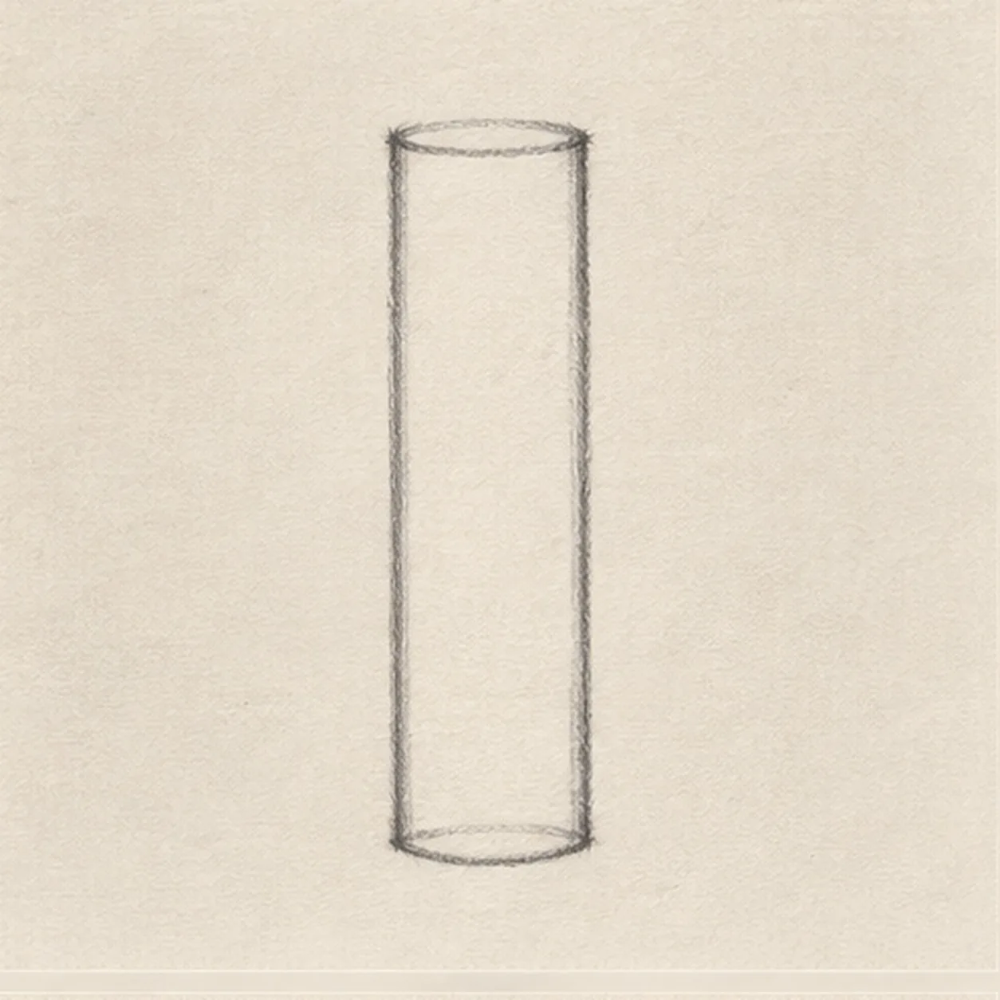
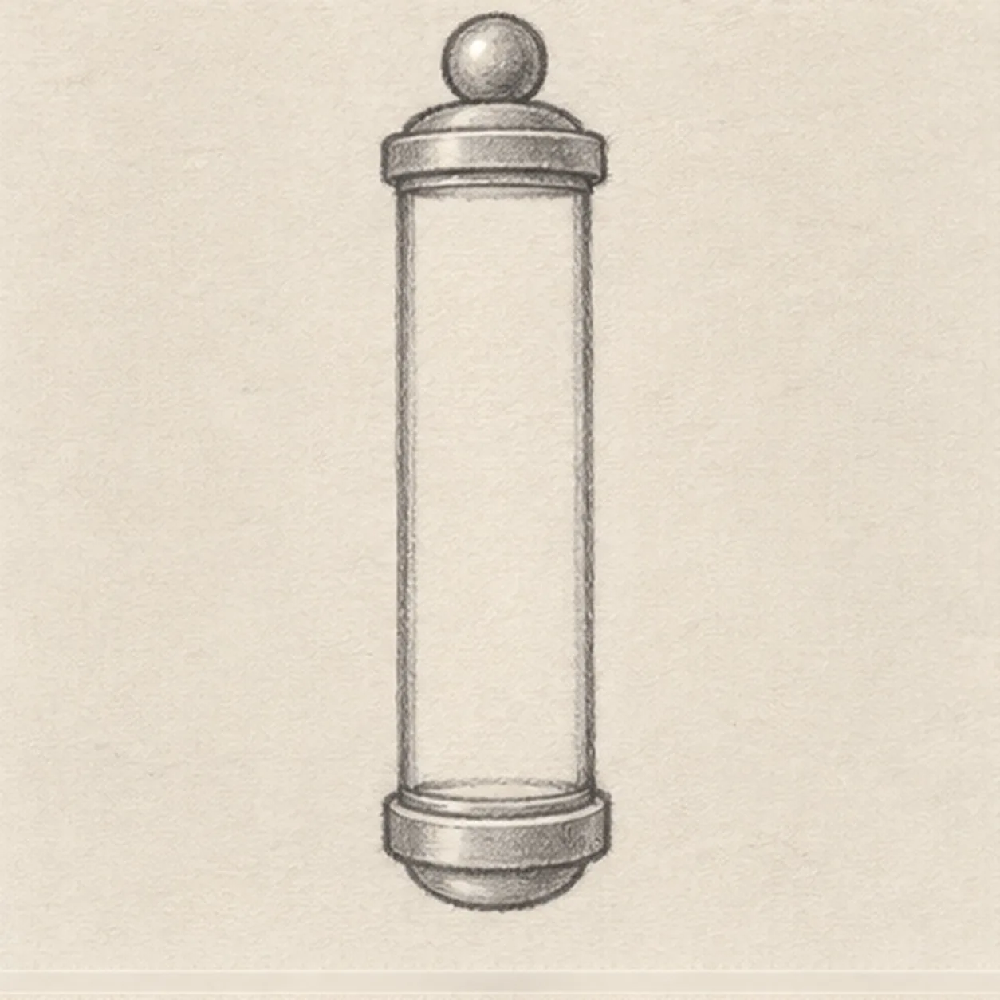
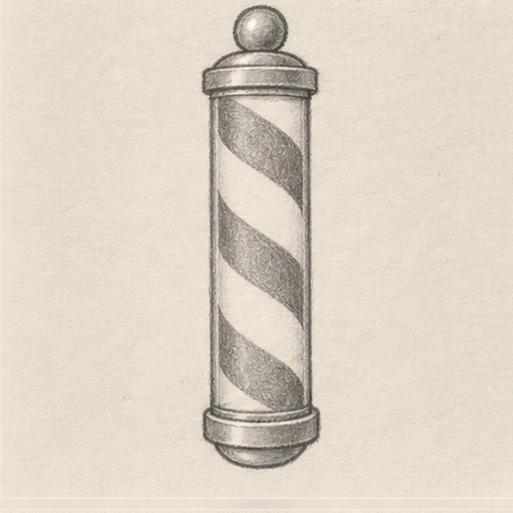
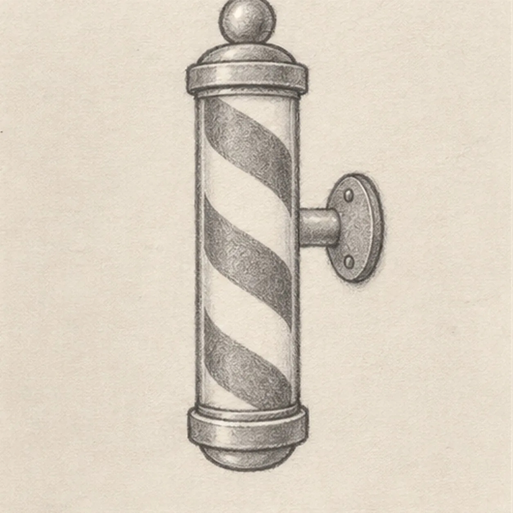
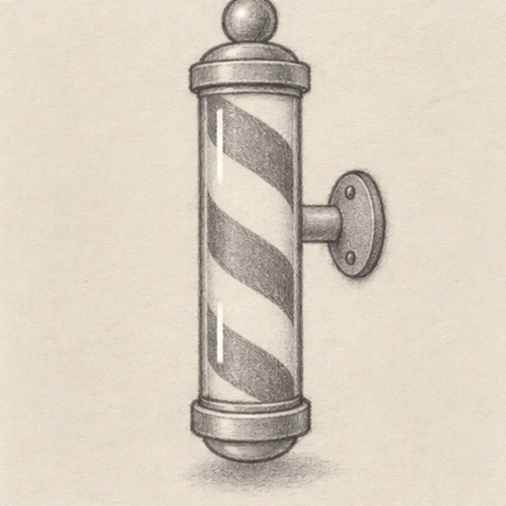

Pencil ready?
Let's draw a barber pole
Treat this as one small practice round: build the subject lightly, notice the shapes, then darken only the lines that help the finished sketch.
-
01

Raise the glass cylinder
Draw two long nearly parallel sides, then connect them with shallow curved ends to make one tall narrow cylinder. Keep its center upright and leave open paper around both ends and along the right side.
Sketch tip: Ghost both long sides before touching down, then compare the narrow paper strip between them from top to bottom. A slight taper is fine, but keep the center axis vertical.
-
02

Cap both ends
Attach one shallow cap across the top edge and one across the bottom edge, following the cylinder's curve. Center one round finial above the top cap and one rounded end below the bottom cap, keeping every part on the same upright axis.
Sketch tip: Check that both caps extend equally beyond the glass. The top ball and rounded lower end should stack directly over the cylinder center.
-
03

Wrap three ribbon bands
Inside the glass, draw exactly three broad parallel bands slanting from upper left toward lower right. Curve each band slightly as it meets the cylinder edges so the ribbon appears to wrap around the round form.
Sketch tip: Mark the six band endpoints lightly first, then connect each pair. Compare the white gaps between bands so the spiral rhythm stays even.
-
04

Attach the wall bracket
From the middle-right back edge, extend one short horizontal bracket and join it to one oval wall mount. Stop the bracket line at the pole edge, then place exactly two round fasteners inside the mount so the glass stays clearly in front.
Sketch tip: Draw the mount after the short bracket. Trace the overlap with your finger: pole in front, bracket behind, mount farthest back.
-
05

Reserve shine and ground it
Place exactly two narrow vertical highlight gaps along the glass front, one high and one low, then sketch one soft broken shadow beneath the lower cap. Keep all three ribbon bands and the bracket fully readable.
Sketch tip: Keep the highlights slim and separated instead of drawing one long stripe. Use the side of the pencil lightly for the shadow so it does not compete with the pole.
-
06

Color the turning stripes
Alternate muted red and dusty blue through the three established ribbon bands, shade the two caps, finial, rounded lower end, bracket, and wall mount with cool gray, and deepen the same broken shadow. Leave both glass highlights open and add no new contours.
Sketch tip: Pull colored-pencil strokes along each diagonal band and build two light layers. Count red-blue-red, two highlights, and two mount fasteners, then stop while the paper tooth still shows.
![Handmade graphite and restrained colored-pencil sketch of one side-view praying mantis angled upward on a warm-brown twig with one pale-olive thorax, one tapered abdomen, one triangular head, exactly two long antennae, one dark near eye with a paper highlight, one visible folded grasping foreleg with inner spines, exactly four long walking legs touching the twig, one muted-green folded wing, exactly three exposed abdomen bands, exactly two attached green leaves, visible paper tooth, and one broken graphite shadow](../assets/praying-mantis-on-a-twig-finished-v1.webp)
![Handmade graphite and restrained colored-pencil sketch of one open warm-cream crayon box in three-quarter view with muted-coral side panels, exactly five crayons rising at varied heights in red, orange, golden yellow, teal, and blue, one pointed tip per crayon, exactly one dark wrapper band per crayon, exactly two outward carton flaps, one blank oval front label, exactly two short front seams, exactly three small wear nicks, exactly two open-paper wrapper highlights, visible paper tooth, and one broken cool-gray ground shadow](../assets/open-box-of-five-crayons-finished-v1.webp)